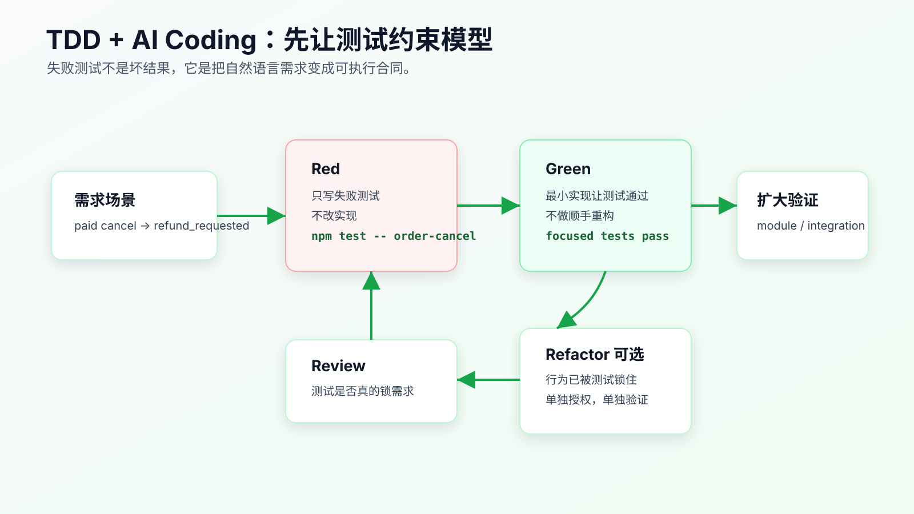
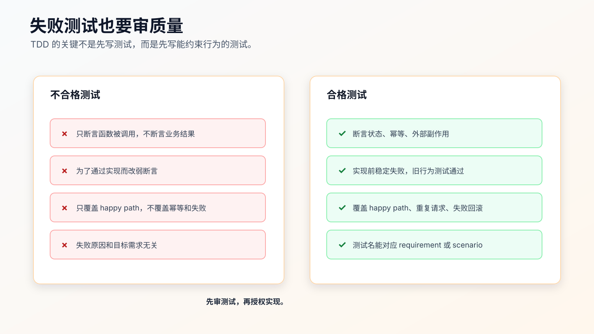

TDD + AI Coding：先让失败测试约束模型
AI Coding 里，测试不只是验证工具。
测试是约束模型的工具。
你用自然语言告诉 AI：
已支付订单取消后进入退款流程。
它可能理解成很多种实现：
- 订单状态直接变成 canceled，然后异步发起退款。
- 订单状态先变成 refund_requested，再创建退款请求。
- 先创建退款请求，再更新订单状态。
- 重复取消时再创建一个退款请求。
- 退款创建失败时仍然把订单状态改掉。
这些实现都可能被模型写得很像样。单靠 prompt，很难保证它选中你真正要的行为。
失败测试的价值，就是把“你想要什么”变成可执行约束。
TDD + AI Coding 的关键不是为了遵守某种开发仪式，而是先让模型面对一个明确的、当前会失败的行为检查，再让它用最小实现把这个检查变绿。

为什么测试比自然语言更能约束 AI
自然语言有两个问题。
第一，它容易被补全。
“走退款流程”对不同项目含义不同。模型会根据训练中的常见模式和当前代码片段补全缺失细节。
第二，它很难证明执行结果。
AI 说“我已经处理了幂等”，你还要去看代码判断它是不是真的处理。测试能把这件事变成一个命令结果。
例如需求是：
paid order cancellation should enter refund_requested and create exactly one refund request.
一个行为测试可以直接锁住三个事实：
test('paid order cancellation enters refund flow once', async () => {
const order = await fixtures.createOrder({ status: 'paid' });
const result = await cancelOrder(order.id);
assert.equal(result.status, 'refund_requested');
assert.equal(await refundRequests.countForOrder(order.id), 1);
});
这段测试不是为了展示语法。它在告诉 AI：
- 最终状态必须是
refund_requested。 - 退款请求必须创建。
- 数量必须是 1。
模型不能用“我觉得这样也合理”绕过去。只要行为不对，测试就失败。
AI 写测试也要先审
不要直接让 AI “补测试并实现”。
这会让测试配合实现，而不是约束实现。
把测试和实现拆开：
先只写测试。
不改实现。
运行 focused test。
确认测试因为目标行为缺失而失败。
人审测试是否真的表达需求。
再授权最小实现。
错误指令：
补测试并实现 paid order cancellation refund flow。
指令要先限制实现：
只执行测试步骤，不改实现代码。
请在 `test/order/order-cancel.test.ts` 中新增失败测试，覆盖：
- paid order cancellation enters refund_requested.
- duplicate paid cancellation does not create duplicate refund requests.
- refund request creation failure keeps order paid.
要求：
- 保留 pending 和 shipped cancellation 旧测试。
- 运行 `npm test -- order-cancel`。
- 预期新增 paid/duplicate/failure 用例失败。
- 如果旧测试失败，停止并报告。
这个指令的重点是“不改实现代码”。
如果 AI 在测试步骤里顺手改实现，让测试直接通过，你就失去了 TDD 的红灯阶段。看起来效率更高，实际少了最关键的证据：测试是否能在旧实现上抓到问题。
失败测试也要审质量
不是所有失败测试都有价值。
有些测试会失败，但失败原因和需求无关；有些测试只断言实现细节；有些测试太弱，随便写个假实现也能通过。

一个合格的失败测试要满足四个条件：
- 失败原因就是目标行为缺失。
- 旧行为的回归测试仍然通过。
- 断言业务结果，而不是只断言内部调用。
- 测试名能对应 requirement 或 scenario。
例如这个测试就偏弱：
test('calls refund service when canceling paid order', async () => {
const refundService = mockRefundService();
await cancelOrder(paidOrder.id, { refundService });
assert.equal(refundService.create.called, true);
});
它只证明调用发生过，不证明订单状态正确，不证明幂等，不证明失败时是否回滚。
更好的测试是：
test('paid cancellation creates one refund request and moves order to refund_requested', async () => {
const order = await fixtures.createOrder({ status: 'paid' });
const result = await cancelOrder(order.id);
assert.equal(result.status, 'refund_requested');
assert.equal(await refundRequests.countForOrder(order.id), 1);
});
再补一个幂等测试：
test('duplicate paid cancellation does not create another refund request', async () => {
const order = await fixtures.createOrder({ status: 'paid' });
await cancelOrder(order.id);
await cancelOrder(order.id);
assert.equal(await refundRequests.countForOrder(order.id), 1);
assert.equal((await orders.find(order.id)).status, 'refund_requested');
});
再补一个失败路径：
test('paid order remains paid when refund request creation fails', async () => {
const order = await fixtures.createOrder({ status: 'paid' });
refundRequests.failNextCreate(new Error('provider unavailable'));
await assert.rejects(() => cancelOrder(order.id));
assert.equal((await orders.find(order.id)).status, 'paid');
});
这三类测试组合起来，需求边界才被测试锁住。
不要让 AI 改弱测试
AI 在让测试变绿时，有时会选择修改测试。
比如测试原本断言：
assert.equal(result.status, 'refund_requested');
实现做不到时，它可能改成：
assert.ok(['canceled', 'refund_requested'].includes(result.status));
测试开始配合实现，约束就失效了。
执行实现步骤时，要明确：
不要修改新增测试的业务断言。
如果测试断言与当前代码冲突，优先修改实现。
如果你认为测试写错，先停止并说明原因，不要直接改测试。
测试不是不能改。测试写错时必须改。但修改测试需要重新授权，不能在实现阶段偷偷把约束放松。
一个实用规则：
Red 阶段可以改测试。
Green 阶段默认不改测试断言。
Refactor 阶段只在行为不变时整理测试结构。
这能减少 AI 为了通过测试而篡改目标的情况。
最小实现比“完整实现”更重要
TDD 的 Green 阶段，不要求一次做完整架构。
它要求用最小实现让当前测试通过。
错误指令：
实现完整退款流程，并顺手优化订单取消代码。
指令要限制改动范围：
只让当前失败测试变绿。
允许修改：
- `src/order/order-status-transition.ts`
- `src/order/order-cancel-service.ts`
- 必要时 `src/refund/refund-request-service.ts`
禁止：
- 修改新增测试的业务断言。
- 改 API response shape。
- 改 payment callback。
- 做无关重构。
验证：
- `npm test -- order-cancel`
完成后停止。
最小实现不是写烂代码。它的意思是：不要在没有测试约束的地方扩大设计。
如果测试只锁住 paid cancellation，就不要顺手实现退款结算 job。
如果测试只锁住重复取消幂等，就不要顺手改支付回调。
每个新增行为都应该先有测试约束。
TDD 可以降低 AI 的“自信错”
AI 很容易写出自信但错误的代码。
比如它看到一个 RefundRequestService.create(orderId)，就假设它有幂等能力。实际项目里可能没有。
如果先写 duplicate cancellation 测试，模型就会被迫面对：
调用两次 cancelOrder 后，refund request count 仍然必须是 1。
它不能只靠猜。
如果实现失败，测试会把问题暴露出来。此时不要让 AI 继续乱改，而是让它解释：
测试失败了。
先不要改代码。
请基于失败输出说明：
- 失败的是哪个 requirement。
- 实际行为是什么。
- 当前实现缺哪一层约束。
- 你准备改哪个文件。
这会把调试从“继续尝试”拉回证据循环。
什么时候不适合 TDD
不是所有任务都适合严格 TDD。
这些任务可以不用完整 TDD：
- 纯文案、样式、配置调整。
- 很薄的 glue code，已有上层测试覆盖。
- 探索性 spike，目标是理解可行性。
- 大规模机械迁移，重点是脚本和 diff 审查。
- 很难本地构造依赖的外部系统交互。
但即使不用完整 TDD，也应该有验证证据。
例如前端交互可以先用浏览器截图或 Playwright 路径锁行为；外部系统交互可以用契约测试、mock server 或人工验证记录；机械迁移可以用脚本输出和抽样 diff。
TDD 是强约束方式，不是唯一方式。
先选测试层级，不要把所有东西塞进一个测试
AI 很容易把一个需求写成一个巨大的端到端测试。这个测试覆盖了页面、接口、数据库、副作用，读起来完整，失败时却很难定位。
TDD 阶段先选测试层级。
| 要约束的行为 | 优先测试层级 | 原因 |
|---|---|---|
| 状态转换规则 | unit / domain test | 反馈快，定位准 |
| API response shape | contract / API test | 锁住调用方合同 |
| 数据持久化和事务 | integration test | 能证明数据库状态 |
| 用户点击路径 | component / E2E | 能证明真实交互 |
| 外部副作用 | service test / fake adapter | 能证明次数、幂等和失败路径 |
订单取消改退款，不应该只靠一个 Playwright 测试证明全部行为。
可以拆成：
domain test: paid -> refund_requested
service test: exactly one refund request is created
API test: response shape unchanged
E2E test: 页面显示退款处理中
这样每个失败都有定位依据。
对 AI 来说，测试层级越清楚，它越不容易为了让一个大测试通过而乱改多层代码。
测试数据要贴近真实状态
AI 写测试时，经常会造一个过度简化的 fixture：
const order = { status: 'paid' };
如果真实取消逻辑需要 id、userId、paymentId、version、shippingStatus，这个 fixture 可能让测试绕开关键路径。
可以要求：
测试数据必须使用项目已有 fixture factory。
不要手写和生产 schema 不一致的对象。
如果 fixture 缺少能力，先报告需要扩展的字段，不要在测试里造假的最小对象。
好的测试数据应该表达业务状态，而不是迎合函数签名：
const order = await fixtures.createOrder({
status: 'paid',
paymentStatus: 'captured',
shippingStatus: 'not_shipped'
});
这比 { status: 'paid' } 更能防止 AI 写出只在测试里成立的实现。
mock 只能隔离边界，不能伪造业务事实
Mock 用得不对，TDD 会变成“测试模型想象中的系统”。
退款请求创建可以 mock 外部支付 provider，但不应该 mock 掉订单状态持久化。如果你要证明订单失败时保持 paid，就必须检查真实 repository 或足够接近真实的测试数据库。
可以写规则：
Allowed mocks:
- external payment provider
- email / SMS / push gateway
- time and id generator
Avoid mocking:
- order status transition logic
- repository behavior under test
- API response serialization being verified
如果 mock 掉了正在验证的东西，测试就失去约束力。
比如这个测试不够好：
mockOrderRepository.findById.returns({ status: 'paid' });
mockOrderRepository.save.returns({ status: 'refund_requested' });
它证明不了持久化真的发生，只证明 mock 被按预期调用。
更有价值的是用测试数据库或内存 repository 检查最终状态：
const saved = await orders.find(order.id);
assert.equal(saved.status, 'refund_requested');
AI 可以写 mock，但你要审 mock 是否隔离的是外部边界，而不是掩盖核心行为。
红灯、绿灯、整理阶段要分开授权
TDD 的三个阶段在 AI Coding 里要拆成三次授权。
Red：
只写失败测试。
不改实现。
运行 focused test。
报告失败是否符合预期。
Green：
只做最小实现。
不改弱测试断言。
不做无关重构。
运行 focused test。
Refactor：
只做行为不变的整理。
不新增功能。
所有相关测试必须保持通过。
输出重构前后 diff 摘要。
不要把 Green 和 Refactor 合并。AI 很容易在“让测试通过”的同时整理结构，最后你不知道行为变化来自哪里。
如果 Green 阶段代码确实很丑，可以先接受一个小的可工作实现，再单独开 Refactor 步骤。重构要靠已有测试保护，而不是靠 AI 自信。
红灯证据要写进记录
TDD 最容易被做成形式：文章里说先写测试，实际执行时没人保留红灯证据。
至少记录三件事：
Red evidence:
- command: `npm test -- order-cancel`
- expected failing tests:
- paid cancellation enters refund flow
- duplicate paid cancellation creates one refund request
- refund request failure keeps order paid
- existing tests:
- pending cancellation passed
- shipped cancellation passed
这段记录有两个作用。
第一，它证明新测试不是写完就被实现配合通过。 第二，它证明旧行为没有在 Red 阶段先坏掉。
如果没有红灯证据，reviewer 很难判断测试是不是事后补的。事后补测试不一定没价值，但它和 TDD 不是一回事。
审 AI 写的测试，先看四个问题
AI 生成测试草稿后，不要只看能不能跑。
先问四个问题：
它是否对应某条 requirement？
它是否会在旧实现上失败？
它是否断言用户可见行为、持久化状态或副作用结果？
它是否依赖过度 mock 或伪造 fixture？
如果答案不清楚，让 Agent 先解释：
请逐条说明新增测试对应哪个 requirement。
请说明为什么这些测试会在当前实现上失败。
请说明每个 mock 隔离的是外部边界还是核心行为。
这一步很实用。AI 有时会写很多测试，但只有一两个真正约束需求。测试数量不是质量，约束力才是质量。
什么时候可以接受事后补测试
生产项目里并不是所有改动都能严格 TDD。有时你是在排障，有时需要先做 spike，有时现有代码很难构造红灯。
事后补测试可以接受，但要诚实记录：
Testing note:
- This was not strict TDD.
- Implementation came first because the failure required exploratory debugging.
- Regression test was added after root cause was confirmed.
- Test fails if the fix is reverted.
这比假装做了 TDD 更专业。
事后补测试的最低标准是：回退修复后测试会失败。否则它只是覆盖现状，不一定能防回归。
契约测试适合防 AI 改坏接口
很多 AI 实现会在不知不觉中改接口合同。
比如原 response 是：
{
"id": "123",
"status": "canceled",
"message": "ok"
}
实现退款流程后，AI 可能改成：
{
"orderId": "123",
"state": "refund_requested",
"refundRequestId": "r_1"
}
新结构可能更“合理”，但调用方会坏。
这类问题适合用契约测试先锁住：
test('cancel order response shape remains compatible', async () => {
const response = await request.post('/api/orders/paid-order-1/cancel');
const body = await response.json();
assert.deepEqual(Object.keys(body).sort(), ['id', 'message', 'status'].sort());
assert.equal(body.status, 'refund_requested');
});
这不是为了迷信字段列表，而是告诉 Agent：这次只允许状态值变化，不允许 response shape 变化。
只要需求涉及 API、事件、队列消息、配置文件、CLI 输出，都可以考虑契约测试。AI 最容易在这些边界上“顺手优化”。
外部依赖要用 fake 或 contract，不要真的打生产服务
TDD 里遇到支付、短信、邮件、AI 模型、第三方 API，不应该真的调用生产服务。
可以选择：
- fake adapter：本地实现同样接口，记录调用次数和参数。
- mock server：模拟第三方响应和失败。
- contract test：验证请求 shape 和错误处理。
- staging 手工验证：作为上线前补充，不替代本地测试。
订单退款场景里，测试应该证明：
refund request creation is called once.
idempotency key is stable.
failure keeps order paid.
payment callback code is untouched.
不应该在单元测试里真的请求支付渠道。
写给 Agent 的规则可以是：
Do not call real external services in tests.
Use the existing fake provider or test adapter.
If no fake exists, stop and propose a minimal fake boundary before implementation.
没有 fake 时，不要让 AI 在业务测试里临时写一个和真实接口完全不相干的 mock。先定义边界，再写测试。
测试维护也要小步
AI 改实现时，测试也可能需要整理。但测试维护要和行为断言分开。
可以拆成：
Step A: 添加新行为测试，保留旧测试结构。
Step B: 最小实现让测试通过。
Step C: 如果测试重复严重，再整理测试 helper。
不要在 Step A 里大规模重写旧测试。旧测试是你的 baseline，重写 baseline 会让你失去判断新需求影响的依据。
如果确实要改测试 helper，要求 Agent 证明行为不变：
只重构测试 helper。
不改变任何业务断言。
重构前后同一测试命令都必须通过。
输出断言变化清单，如果断言变化为 0，请明确说明。
测试代码也是生产资产。AI 可以帮助维护，但不能让它在实现阶段随意削弱约束。
怎么把 TDD 写进 tasks
在 tasks.md 里，不要只写“补测试”。
要写成：
## Task 1: Add failing behavior tests
Goal:
- Convert paid cancellation requirements into executable checks.
Files:
- `test/order/order-cancel.test.ts`
Add tests:
- paid cancellation moves order to refund_requested and creates one refund request.
- duplicate paid cancellation does not create another refund request.
- refund request creation failure keeps order paid.
Verify:
- `npm test -- order-cancel`
Expected before implementation:
- existing pending and shipped tests pass.
- new paid, duplicate and failure tests fail.
Stop if:
- existing behavior tests fail before implementation.
- test setup cannot create paid orders.
再写实现任务：
## Task 2: Make focused tests pass with minimal implementation
Files:
- `src/order/order-status-transition.ts`
- `src/order/order-cancel-service.ts`
- `src/refund/refund-request-service.ts`
Verify:
- `npm test -- order-cancel`
Rules:
- Do not weaken Task 1 assertions.
- Do not change public API response shape.
- Do not modify payment callback flow.
Stop if:
- database schema changes are required.
- refund idempotency requires a broader design decision.
这样的 tasks 能直接驱动 AI 小步执行。
用本项目的测试看一个真实边界
配套工程的工具 module ai-coding-workflow-kit 里有一个很小的验证记录校验器。它不是业务系统，但测试展示了一个真实边界：AI 声称“验证完成”时，至少要有必要段落、命令块和通过信号。
对应测试长这样：
test('reports missing sections and missing command evidence', () => {
const result = validateLedger('## Baseline\nNo command yet.');
assert.equal(result.ok, false);
assert.deepEqual(result.missing, [
'Change Summary',
'Verification Commands',
'Evidence',
'Residual Risk'
]);
assert.equal(result.hasCommand, false);
assert.equal(result.hasPassedSignal, false);
});
它锁住的不是语法，而是行为：缺段落、缺命令、缺通过信号时不能被认为可用。
如果让 AI 改这个校验器，正确的 TDD 步骤不是“优化校验逻辑”，而是先补一个失败测试。例如要求 ledger 必须包含 baseline 命令：
test('requires baseline command evidence', () => {
const result = validateLedger(`
## Baseline
Existing failure was mentioned but no command was recorded.
## Change Summary
Restricted status transition.
## Verification Commands
\`\`\`bash
npm test
\`\`\`
## Evidence
PASS 12 tests passed.
## Residual Risk
Manual payment provider callback not covered.
`);
assert.equal(result.ok, false);
});
这个测试失败后，再让 AI 修改 verification-ledger.js。这样它会被测试约束在“baseline 也要有命令证据”这个行为上，而不是随手重写整个校验器。
这里不是为了造代码，而是为了说明一个能迁移到多数项目的原则：先把你担心的失败模式写成测试。
常见错误
错误一：让 AI 同时写测试和实现。
这样看不到测试是否能在旧实现上失败，也容易让测试配合实现。
错误二：只测 happy path。
真实问题常出在重复请求、失败回滚、兼容性和边界状态。
错误三：断言内部调用，不断言业务结果。
内部调用可以作为补充，但核心测试要断言状态、数据、副作用和错误行为。
错误四：实现阶段修改测试断言。
测试写错可以改，但必须停下来说明原因并重新授权。
错误五：测试失败后让 AI 自由修。
先分类失败，再决定改测试、改实现还是停住。
错误六：把 TDD 用在所有任务上。
小文案、小配置、探索 spike 不一定需要 TDD，但仍然需要对应验证证据。
改完后重点看什么
TDD + AI Coding 做完后，看这些结果：
- 新测试是否先在旧实现上失败过。
- 失败原因是否对应目标需求。
- 旧行为测试是否仍然通过。
- 实现阶段是否改弱了测试断言。
- 最小实现是否只覆盖当前测试约束的行为。
- 后续是否扩大了模块测试或集成验证。
如果没有红灯证据，TDD 就只剩“先写了测试”的形式。
红灯记录还会影响后续排障。后面如果 CI 出现同一失败，reviewer 能判断它是预期红灯、旧失败，还是当前实现引入的新失败。
AI Coding 里的 TDD，是把模型从“根据文字猜实现”拉到“根据可执行行为收敛实现”。测试红灯比多写几句 prompt 更能约束结果。
常见问题
让 AI 写测试靠谱吗？
可以，但要先审测试。AI 很适合根据 requirement 生成测试草稿，不适合无人审查地决定测试是否充分。
失败测试是不是必须真的跑一遍？
复杂行为建议跑。没有红灯结果，你不知道测试是否能抓住旧实现的问题。跑不了时要记录原因和替代证据。
测试写错了怎么办？
停下来改测试。不要在实现阶段悄悄改断言。把“为什么测试错了”写清楚，再重新进入 Red 阶段。
已有测试很多，还需要新测试吗？
看现有测试是否覆盖目标 requirement。如果没有覆盖新增行为、幂等和失败路径，就需要补。
TDD 会不会让 AI 速度变慢？
单次输出会变慢，但减少返工。对状态机、权限、支付、持久化这类风险高的任务，红灯证据很值。
可复查资料
- Node.js Test Runner 官方文档：https://nodejs.org/api/test.html
- Jest getting started：https://jestjs.io/docs/getting-started
- Martin Fowler: TestDrivenDevelopment：https://martinfowler.com/bliki/TestDrivenDevelopment.html
- OpenAI Codex best practices：https://developers.openai.com/codex/learn/best-practices